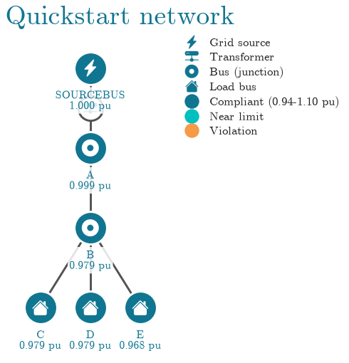
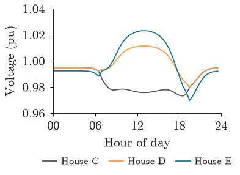

Quickstart#
This page builds a small low-voltage network, solves it, checks its voltages against a standard and
simulates one day with rooftop solar. Every output on the page is produced by the code above it when
the documentation is built. To run it yourself, install the opendss and plot extras (see
Installation).
Build a network#
A Circuit attaches to the OpenDSS engine. You define the network with
OpenDSS’s own commands: here an 11/0.4 kV transformer, a 1 km cable and three houses, one on each phase.
from popo.network import Circuit
circuit = Circuit()
for command in [
"Clear",
"Set DefaultBaseFrequency=50",
"New Circuit.Quickstart",
"Edit Vsource.Source bus1=SourceBus basekv=11 pu=1.0 phases=3",
"New Transformer.LVTR Buses=[SourceBus, A.1.2.3] Conns=[delta wye] KVs=[11, 0.4] KVAs=[250 250] xhl=2.5",
"New Linecode.240sq nphases=3 R1=0.127 X1=0.072 units=km",
"New Linecode.16sq nphases=1 R1=1.15 X1=0.083 units=km",
"New Line.A_B bus1=A.1.2.3 bus2=B.1.2.3 length=1 units=km linecode=240sq",
"New Line.B_C bus1=B.1 bus2=C.1 length=0.02 units=km linecode=16sq",
"New Line.B_D bus1=B.2 bus2=D.2 length=0.02 units=km linecode=16sq",
"New Line.B_E bus1=B.3 bus2=E.3 length=0.02 units=km linecode=16sq",
"New Load.House_C bus1=C.1 phases=1 kV=0.23 kW=7 pf=0.95",
"New Load.House_D bus1=D.2 phases=1 kV=0.23 kW=6 pf=0.95",
"New Load.House_E bus1=E.3 phases=1 kV=0.23 kW=8 pf=0.95",
"Set VoltageBases=[11 0.4]",
"CalcVoltageBases",
]:
circuit.command(command)
circuit.solve()
circuit.converged
True
Inspect its elements#
The circuit yields its lines, loads, transformers, PV systems and storage units as records, which convert directly to a DataFrame.
pd.DataFrame(circuit.loads)
| name | bus1 | kw | kvar | pf | phases | |
|---|---|---|---|---|---|---|
| 0 | house_c | c.1 | 7.0 | 2.301 | 0.95 | 1 |
| 1 | house_d | d.2 | 6.0 | 1.972 | 0.95 | 1 |
| 2 | house_e | e.3 | 8.0 | 2.629 | 0.95 | 1 |
Read the results#
bus_voltages() returns one row per bus and connected phase. House D
appears only on phase 2 and house E only on phase 3, the phases they are connected to.
voltages = circuit.bus_voltages()
voltages
| bus | phase | vmag_pu | vangle_deg | kv_base | |
|---|---|---|---|---|---|
| 0 | sourcebus | 1 | 1.000 | -4.915e-04 | 6.351 |
| 1 | sourcebus | 2 | 1.000 | -1.200e+02 | 6.351 |
| 2 | sourcebus | 3 | 1.000 | 1.200e+02 | 6.351 |
| 3 | a | 1 | 0.999 | -3.012e+01 | 0.231 |
| 4 | a | 2 | 0.999 | -1.501e+02 | 0.231 |
| 5 | a | 3 | 0.999 | 8.987e+01 | 0.231 |
| 6 | b | 1 | 0.982 | -3.046e+01 | 0.231 |
| 7 | b | 2 | 0.982 | -1.501e+02 | 0.231 |
| 8 | b | 3 | 0.972 | 8.947e+01 | 0.231 |
| 9 | c | 1 | 0.979 | -3.041e+01 | 0.231 |
| 10 | d | 2 | 0.979 | -1.500e+02 | 0.231 |
| 11 | e | 3 | 0.968 | 8.952e+01 | 0.231 |
summary() gives the size of the circuit, whether it converged and its
total losses.
circuit.summary()
{'converged': True,
'n_buses': 6,
'n_lines': 4,
'n_loads': 3,
'n_transformers': 1,
'total_p_loss_kw': 0.49856510379089014,
'total_q_loss_kvar': 0.30006894118455557}
Check against a standard#
VoltageLimits holds a standard’s band and the rule for applying it. The
source bus is held at its setpoint, so it is excluded before the check.
from popo.standards import VoltageLimits
limits = VoltageLimits.en_50160()
customers = voltages.query("bus != @circuit.source_bus")
print(limits.check(customers["vmag_pu"]).summary())
EN 50160: compliant; 100.00 % within band, range 0.9684 to 0.9991 pu
violations() lists every reading outside the band. At this
loading there are none.
limits.violations(customers)
| bus | phase | vmag_pu | vangle_deg | kv_base | side | severity_pu |
|---|
Draw the network#
plot_topology() draws the network with each bus coloured by its
voltage status.
from popo.plotting import line_style
from popo.plotting.network import plot_topology, topology_from_dss
line_style.configure(latex=False)
plot_topology(topology_from_dss(circuit.dss), title="Quickstart network", figsize=(5.0, 3.6));
findfont: Failed to find font weight bold for cmr10, now using 400.

Simulate a day#
To step through time, each load follows a daily profile. Here every house follows the same demand
shape, with peaks in the morning and evening, and house E gets a 10 kVA rooftop PV system that
follows a clear-sky solar shape. Both profiles have 48 half-hourly values.
import numpy as np
hours = np.arange(48) / 2
demand = 0.25 + 0.35 * np.exp(-(((hours - 8) / 1.5) ** 2)) + 0.75 * np.exp(-(((hours - 19) / 2.0) ** 2))
solar = np.clip(np.sin(np.pi * (hours - 6) / 14), 0, None)
def as_mult(values):
return ",".join(f"{v:.3f}" for v in values)
circuit.command(f"New Loadshape.Demand npts=48 interval=0.5 mult=({as_mult(demand)})")
circuit.command(f"New Loadshape.Solar npts=48 interval=0.5 mult=({as_mult(solar)})")
for house in ["C", "D", "E"]:
circuit.command(f"Edit Load.House_{house} daily=Demand")
circuit.command("New PVSystem.PV_E phases=1 bus1=E.3 kV=0.23 kVA=10 Pmpp=10 irradiance=1 daily=Solar");
solve_time_series() solves the 48 steps. It records the transformer at
every step and, when you pass buses, the voltage at each of those buses too. The report says whether
every step converged.
report = circuit.solve_time_series(48, buses=["c", "d", "e"])
report.converged
True
report.records has one row per step and transformer: active, reactive and apparent power at the
secondary winding, the busbar voltage, and the power at the head of the feeder. At midday the PV
output exceeds the three houses’ demand, so the transformer’s active power turns negative.
report.records[["step", "trafo", "p_kw", "q_kvar", "s_kva", "v_lv_pu"]].iloc[20:28]
| step | trafo | p_kw | q_kvar | s_kva | v_lv_pu | |
|---|---|---|---|---|---|---|
| 20 | 20 | lvtr | -1.208 | 2.298 | 2.596 | 1.0 |
| 21 | 21 | lvtr | -2.608 | 2.075 | 3.333 | 1.0 |
| 22 | 22 | lvtr | -3.460 | 1.993 | 3.993 | 1.0 |
| 23 | 23 | lvtr | -3.955 | 1.989 | 4.427 | 1.0 |
| 24 | 24 | lvtr | -4.292 | 1.993 | 4.732 | 1.0 |
| 25 | 25 | lvtr | -4.473 | 2.004 | 4.902 | 1.0 |
| 26 | 26 | lvtr | -4.531 | 2.008 | 4.956 | 1.0 |
| 27 | 27 | lvtr | -4.474 | 2.004 | 4.902 | 1.0 |
voltage_traces() returns each bus’s voltage over the day.
from popo.plotting import tokens
traces = report.voltage_traces()
colors = {"c": tokens.TEXT_MUTED, "d": tokens.HIGHLIGHT, "e": tokens.PRIMARY}
fig, ax = line_style.new_panel()
for bus, trace in traces.items():
ax.plot(hours, trace, color=colors[bus], lw=line_style.LINE_WIDTH, label=f"House {bus.upper()}")
line_style.hour_axis(ax)
line_style.set_y_axis(ax, *traces.values())
ax.set_ylabel("Voltage (pu)")
line_style.finish(ax)
line_style.legend_below(ax, ncol=3)
line_style.show(fig)

While the PV system generates, the voltage at house E rises to about 1.02 pu. The unbalanced flow
also moves the other phases: house D rises and house C falls, so a single-phase installation
changes the voltage seen by customers on other phases.
event_summary() reports, for each bus, how far and for how long
its voltage left the band; here every house stays within it.
limits.event_summary(traces)
| name | v_mean_pu | v_min_pu | v_max_pu | v_std_pu | over_steps | over_severity_pu | over_longest_steps | under_steps | under_severity_pu | under_longest_steps | |
|---|---|---|---|---|---|---|---|---|---|---|---|
| 0 | c | 0.985 | 0.973 | 0.995 | 0.008 | 0 | 0.0 | 0 | 0 | 0.0 | 0 |
| 1 | d | 0.998 | 0.980 | 1.011 | 0.009 | 0 | 0.0 | 0 | 0 | 0.0 | 0 |
| 2 | e | 0.999 | 0.970 | 1.023 | 0.015 | 0 | 0.0 | 0 | 0 | 0.0 | 0 |
Next steps#
Key concepts explains per unit, phases, statutory limits and observability.
The user guide covers each module in more depth.
The tutorials work through three studies on real feeders, including hosting capacity and state estimation.